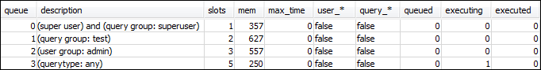
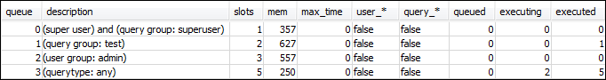
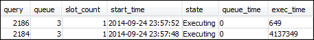

단원 3: 사용자 그룹 및 쿼리 그룹을 기반으로 쿼리를 대기열로 라우팅
이제 클러스터를 새로운 파라미터 그룹과 연결했고 WLM을 구성했습니다. 다음으로 몇 가지 쿼리를 실행하여 Amazon Redshift가 처리를 위해 쿼리를 대기열로 라우팅하는 방법에 대해 알아봅니다.
1단계: 데이터베이스에서 쿼리 대기열 구성 보기
먼저 데이터베이스에 원하는 WLM 구성이 있는지 확인합니다.
쿼리 대기열 구성을 보려면
-
RSQL을 열고 다음 쿼리를 실행합니다. 쿼리는 1단계: WLM_QUEUE_STATE_VW 뷰 생성에서 생성한 WLM_QUEUE_STATE_VW 뷰를 사용합니다. 클러스터 재부팅 이전에 세션이 이미 데이터베이스에 연결되어 있다면 다시 연결해야 합니다.
select * from wlm_queue_state_vw;다음은 예 결과입니다.
위 결과를 1단계: WLM_QUEUE_STATE_VW 뷰 생성에서 나온 결과와 비교합니다. 여기에서는 대기열 2개가 추가된 것을 알 수 있습니다. 대기열 1은 테스트 쿼리 그룹을 위한 대기열이고, 대기열 2는 관리자 사용자 그룹을 위한 대기열입니다.
대기열 3은 이제 기본 대기열입니다. 목록에서 마지막 대기열은 항상 기본 대기열입니다. 즉 쿼리에서 사용자 그룹 또는 쿼리 그룹을 따로 지정하지 않으면 쿼리가 기본적으로 라우팅되는 대기열을 말합니다.
-
다음 쿼리를 실행하여 쿼리가 대기열 3에서 실행되는지 확인합니다.
select * from wlm_query_state_vw;다음은 예 결과입니다.

2단계: 쿼리 그룹 대기열을 사용하여 쿼리 실행
쿼리 그룹 대기열을 사용하여 쿼리를 실행하려면
-
다음 쿼리를 실행하여
test쿼리 그룹으로 라우팅합니다.set query_group to test; select avg(l.priceperticket*s.qtysold) from listing l, sales s where l.listid <40000; -
나머지 RSQL 창에서 다음 쿼리를 실행합니다.
select * from wlm_query_state_vw;다음은 예 결과입니다.

쿼리가 테스트 쿼리 그룹인 대기열 1로 라우팅되었습니다.
-
대기열 상태 뷰에서 모두 선택합니다.
select * from wlm_queue_state_vw;다음과 같은 결과가 출력됩니다.

-
이제 쿼리 그룹을 재설정한 후 장기(long) 쿼리를 다시 실행합니다.
reset query_group; select avg(l.priceperticket*s.qtysold) from listing l, sales s where l.listid <40000; -
두 뷰에 대한 쿼리를 실행하여 결과를 확인합니다.
select * from wlm_queue_state_vw; select * from wlm_query_state_vw;다음은 예 결과입니다.
결과는 위와 같이 쿼리가 다시 대기열 3에서 실행되고 있는 모습이어야 합니다.
3단계: 데이터베이스 사용자 및 그룹 생성
이 대기열에서 쿼리를 실행하려면 먼저 사용자 그룹을 데이터베이스에 생성한 후 사용자를 그룹에 추가해야 합니다. 그런 다음 새로운 사용자의 자격 증명을 사용해 RSQL에 로그인하여 쿼리를 실행합니다. 데이터베이스 사용자를 생성하려면 관리자와 같은 슈퍼 사용자 권한으로 쿼리를 실행해야 합니다.
새로운 데이터베이스 사용자와 사용자 그룹을 생성하려면
-
RSQL 창에서 다음 명령을 실행하여
adminwlm이라는 이름의 새로운 데이터베이스 사용자를 데이터베이스에 생성합니다.create user adminwlm createuser password '123Admin'; -
그러고 나서 다음 명령을 실행하여 새로운 사용자 그룹을 생성한 후 새로운
adminwlm사용자를 그룹에 추가합니다.create group admin; alter group admin add user adminwlm;
4단계: 사용자 그룹 대기열을 사용하여 쿼리 실행
다음으로 쿼리를 실행하여 사용자 그룹 대기열에 라우팅합니다. 이는 실행할 쿼리 유형을 처리하도록 구성된 대기열에 쿼리를 라우팅할 때 필요합니다.
사용자 그룹 대기열을 사용하여 쿼리를 실행하려면
-
RSQL 창 2에서 다음 쿼리를 실행하여
adminwlm계정으로 전환한 후 해당 사용자 권한으로 쿼리를 실행합니다.set session authorization 'adminwlm'; select avg(l.priceperticket*s.qtysold) from listing l, sales s where l.listid <40000; -
RSQL 창 1에서 다음 쿼리를 실행하여 쿼리가 라우팅되는 대기열을 확인합니다.
select * from wlm_query_state_vw; select * from wlm_queue_state_vw;다음은 예 결과입니다.


이 쿼리가 실행된 대기열은 2번인
admin사용자 대기열입니다. 이제 앞으로 이 사용자 권한으로 로그인하여 쿼리를 실행할 때마다 다른 쿼리 그룹을 지정하지 않는 한 대기열 2에서 쿼리가 실행됩니다. 선택한 대기열은 대기열 할당 규칙에 따라 달라집니다. 자세한 내용은 WLM 대기열 할당 규칙 섹션을 참조하세요. -
이제 RSQL 창 2에서 다음 쿼리를 실행합니다.
set query_group to test; select avg(l.priceperticket*s.qtysold) from listing l, sales s where l.listid <40000; -
RSQL 창 1에서 다음 쿼리를 실행하여 쿼리가 라우팅되는 대기열을 확인합니다.
select * from wlm_queue_state_vw; select * from wlm_query_state_vw;다음은 예 결과입니다.


-
모두 마친 후에는 쿼리 그룹을 재설정합니다.
reset query_group;